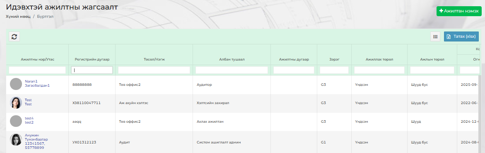
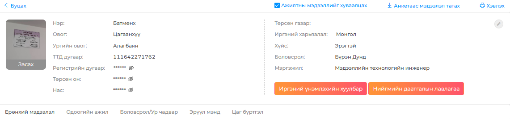

Ажилтны жагсаалтаас ажилтан хайхдаа Хянах самбар ⭢ Ажилтны жагсаалт гэсэн дарааллаар орох бөгөөд “Идэвхтэй ажилтны жагсаалт” цонх гарч ирэх бөгөөд тус цонхноос ажилтныг бүх (Нэр, утас, хүйс, албан тушаал, төсөл/нэгжээр гэх мэт) талбараар хайлт хийх боломжтой.

